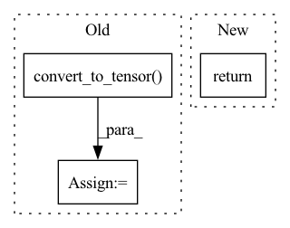

Pattern ID :23396
Before Change
// Choose segmentation loss
if len(cfg.class_w) > 0:
class_w = tf.convert_to_tensor( class_w, dtype=tf.float32)
self.criterion = torch.nn.CrossEntropyLoss(weight=class_w, ignore_index=-1)
else:
self.criterion = torch.nn.CrossEntropyLoss(ignore_index=-1)
self.deform_fitting_mode = config.deform_fitting_modeAfter Change
// self.reg_loss = 0
// self.l1 = nn.L1Loss()
return
def organise_inputs(self, flat_inputs):
cfg = self.cfg
In pattern: SUPERPATTERN
Frequency: 3
Non-data size: 3
Instances Fragment ID: 73529632
Project Name: isl-org/open3d-ml
Commit Name: 87ca7bd50781d154e3d025de7d057a08a0f37575
Time: 2020-08-21
Author: sanskaragrawal107@gmail.com
File Name: ml3d/tf/models/kpconv.py
M Class Name: KPFCNN
N Class Name: KPFCNN
M Method Name: __init__(2)
N Method Name: __init__(2)
M Parent Class: tf.keras.Model
N Parent Class: tf.keras.Model
M File Name: ml3d/tf/models/kpconv.py
N File Name: ml3d/tf/models/kpconv.py
M Start Line: 632
M End Line: 732
N Start Line: 46
N End Line: 146
Before Change
seg_target = tf.convert_to_tensor(seg_target, dtype=out_map.dtype)
seg_mask = tf.convert_to_tensor(seg_mask, dtype=tf.bool)
if edge_factor > 0:
edge_mask = tf.convert_to_tensor( edge_mask, dtype=tf.bool)
// Get the cross_entropy for each entry
loss = tf.keras.losses.binary_crossentropy(seg_target, out_map, from_logits=True)[..., None]
After Change
cardinality = tf.math.reduce_sum(prob_map[seg_mask] + seg_target[seg_mask])
dice_loss = 1 - 2 * inter / (cardinality + 1e-8)
return tf.math.reduce_mean(bce_loss[seg_mask]) + dice_loss
def call(
self, Fragment ID: 73529635
Project Name: mindee/doctr
Commit Name: 612e4f828bb169cb1091505cd5aebc20c432a0c9
Time: 2022-02-14
Author: charles@mindee.co
File Name: doctr/models/detection/linknet/tensorflow.py
M Class Name: LinkNet
N Class Name: LinkNet
M Method Name: compute_loss(3)
N Method Name: compute_loss(4)
M Parent Class: keras.Model,_LinkNet
N Parent Class: keras.Model,_LinkNet
M File Name: doctr/models/detection/linknet/tensorflow.py
N File Name: doctr/models/detection/linknet/tensorflow.py
M Start Line: 142
M End Line: 172
N Start Line: 155
N End Line: 167
Before Change
def __call__(self, image, resize_method="bilinear", resize_antialias=False, input_shape=None):
input_shape = self.input_shape if input_shape is None else input_shape[:2]
image = tf.convert_to_tensor( image)
if tf.reduce_max(image) < 2:
image *= 255
image = tf.image.resize(image, input_shape, method=resize_method, antialias=resize_antialias)
if len(image.shape) == 3:
image = tf.expand_dims(image, 0)
After Change
images = (np.stack(images) - self.mean) / self.std
images = images if backend.image_data_format() == "channels_last" else images.transpose([0, 3, 1, 2])
return functional.convert_to_tensor(images)
def imagenet_decode_predictions(preds, top=5): Fragment ID: 73529641
Project Name: leondgarse/keras_cv_attention_models
Commit Name: 2f70b0d51c8f2b1f8664f32dc75ecc1001758946
Time: 2023-01-29
Author: leondgarse@gmail.com
File Name: keras_cv_attention_models/common_layers.py
M Class Name: PreprocessInput
N Class Name: PreprocessInput
M Method Name: __call__(5)
N Method Name: __call__(5)
M Parent Class:
N Parent Class:
M File Name: keras_cv_attention_models/common_layers.py
N File Name: keras_cv_attention_models/common_layers.py
M Start Line: 586
M End Line: 601
N Start Line: 609
N End Line: 616